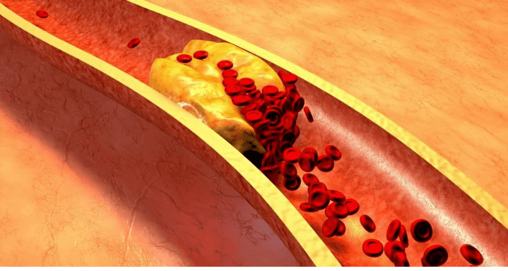
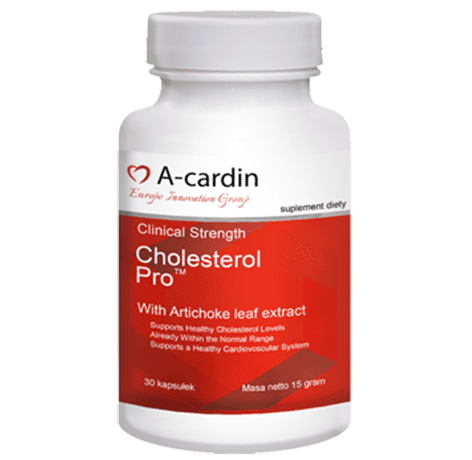

Wszyscy wiedzą, że ciśnienie,
udar i zawał serca to konsekwencje “zanieczyszczeniaa” naczyń
krwionośnych cholesterolem. Niewiele osób zdaje sobie jednak sprawę, że
Zatkane naczynia krwionośne to w 9 na 10 przypadkach winowajca chorób przewlekłych, które są rzekomo nieuleczalne.
Nadciśnienie to choroba, na którą w Polsce choruje co trzeci dorosły Polak. Duża część tej kilkumilionowej populacji nie zdaje sobie sprawy z istnienia problemu i nie stosuje żadnego leczenia. Wśród osób świadomych własnej choroby wielu leczonych jest nieodpowiednio np. nieregularnie przyjmują leki, bądź rezygnują z ich zażywania, zdarza się również, że dawki są źle dobierane. Niestety wieloletnia zła kontrola ciśnienia tętniczego ma szkodliwy wpływ na funkcjonowanie układu krążenia i nerek, wywołując przy tym liczne, groźne dla zdrowia i życia powikłania.
- Co powinieneś wiedzieć o hipertoniczności?
- Dlaczego naczynia krwionośne odpowiadają za 85% Twojego zdrowia?
- Co jeszcze, poza cholesterolem, szkodzi naczyniom krwionośnym?
- 4 widoczne i 7 ukrytych oznak złego stanu naczyń krwionośnych
- Jak bezpiecznie oczyścić naczynia krwionośne w domu?
Na pytania te odpowiedział Jerzy Vetulani
- polski psychofarmakolog, neurobiolog, biochemik, profesor nauk
przyrodniczych, członek Polskiej Akademii Nauk i Polskiej Akademii
Umiejętności. Przez cały okres pracy zawodowej związany z Instytutem
Farmakologii Polskiej Akademii Nauk w Krakowie, gdzie był profesorem,
kierownikiem Zakładu Biochemii (1976–2006), zastępcą dyrektora ds.
naukowych (1994–2002) i wiceprzewodniczącym Rady Naukowej (2003-2017).
Adam Kowalski:
Profesorze, zawsze Pan powtarza, że naczynia krwionośne odpowiadają za 85% zdrowia naszego organizmu. Dlaczego tak jest?
Jaki jest największy organ w ludzkim ciele? Niewiele osób zna odpowiedź na to pytanie. Nawet studenci medycyny często się mylą. Najczęściej słyszę od nich, że chodzi o mózg i wątrobę. Osoby ze stopniem naukowym odpowiadają, że jest to skóra. Tak naprawdę największym organem jest nasz
układ
krwionośny. Naczynia to nie tylko rurki, którymi przepływa krew. To
złożony, pojedynczy organ, którego niewydolność od razu kończy się
cierpieniem.
Chore naczynia nóg – żylaki,
ciągłe obrzęki i wieczna ociężałość nóg, uczucie zimna czy nieznośnego pieczenia w stopach, spękane piety. Słabe krążenie krwi –
brak ochrony przed bakteriami, a więc i grzybami. Paznokcie robią się
grube i długie.
Zapchane naczynia odżywiające wątrobę – prowadzą do zapalenia wątroby. Odczuwamy gorzki posmak w ustach po spożyciu tłuszczów.
Osłabione i zanieczyszczone naczynia prowadzące do stawów – oznaczają wyschniętą chrząstkę. Stawy zgrzytają, pojawiają się oznaki osteochondrozy i przepuklina.
Naczynia odbytu słabną – hemoroidy wykwitają purpurowymi stożkami.
Naczynia krwionośne oczu – wzrok się pogarsza, pojawiają się ruchome plamki przed oczami. Rozwija się zaćma. Zaczerwienienie oczu, za które często obwiniamy zmęczenie, to tak naprawdę mikro krwotok- pęknięcie najdrobniejszych naczyń włosowatych oka.
“Bez zdrowia nie ma szczęścia' — a zdrowia nie ma bez czystych naczyń"
"Zapchane" naczynia – głód wszystkich organów.
Nadwaga, jest blisko powiązana z układem krążenia. Naczynia przepełnione cholesterolem zmuszają organy do głodowania, ponieważ nie są w stanie dostarczyć im odpowiedniej ilości składników odżywczych. W związku z tym mózg wysyła sygnał – musisz jeść, choć organom wciąż brakuje „pokarmu”. I tak w kółko.
Stąd ciągła potrzeba podjadania, ochota na słodycze i tłuste potrawy- organizm potrzebuje kalorii.
Kiedy koledzy po fachu mówią pacjentom: „Ma Pan/i nadciśnienie spowodowane nadwagą” myli im się przyczyna ze skutkiem. To nie nadciśnienie spowodowane jest nadwagą, a odwrotnie.
Dlatego nigdy nie przestanę powtarzać: „Jeżeli chcesz żyć pełnią życia, oczyść i odbuduj naczynia krwionośne”. Czyste naczynia to klucz do pozbycia się
chorób, z których
niektóre uznawane są za “nieuleczalne”.
“Jeśli
normalny przekrój naczynia jest grubości palca, wówczas 5 kg blaszek
cholesterolu redukuje przekrój do rozmiaru 4 zapałek”
Adam Kowalski: Profesorze, wszyscy wiedzą, że cholesterol jest zły. To on zapycha nasze żyły, zwęża przepływ i zakłóca krążenie krwi, ale czy tylko on jest winowajcą?
Tak, dokładnie. Blaszki cholesterolu, znane również jako blaszki miażdżycowe, odpowiedzialne są za około 60-70% zatkanych naczyń.
W wieku 50 lat, w naszych naczyniach zgromadzi się do 5 kg blaszek cholesterolu. Jego nadmiar zmniejsza przepływ krwi do 4-5 razy.

5 kg całkowita masa zanieczyszczeń nagromadzonych w naczyniach w wieku 50 lat
Blaszki cholesterolu choć bezpośrednio nie zagrażają naszemu życiu to osłabiają jego jakość. Mają wpływ na ciśnienie krwi, mogą wywołać bóle głowy, stawów, osłabienie i apatię. Masa zakrzepu, która również nagromadza się w naszych naczyniach jest dużo bardziej niebezpieczna.
Choć skrzepy krwi są niewielkie to stwarzają zagrożenie poprzez ich niestabilność. W każdej chwili zakrzep może zacząć się przemieszczać.
Jeśli zakrzep będzie dość duży, może zatamować naczynie krwionośne, co doprowadzi do niedokrwienia. Krew przestanie napływać do konkretnego organu, co może doprowadzić do:
• Udaru niedokrwiennego – poprzez zatamowanie naczyń mózgowych.
• Zawał serca – poprzez zatamowanie arterii sercowej.
• Niedokrwienia wątroby.
• Odmy opłucnowej.
• Niewydolności nerek.
• Hemoroidów – pojawiają się poprzez niedokrwienie naczyń odbytu.
Niedokrwienie nawet najmniejszych naczyń może doprowadzić do martwicy.
Zwapnienie naczyń powodują
pozostałości leków chemicznych oraz dodatków do żywności. Nagromadzają
się w wieku 50 lat w ilości 300 - 400 gramów. Większość zwapnienia
zachodzi w naczyniach mózgowych.
Zwapnienie jest niebezpieczne ze względu na swoją ostrą, krystaliczną strukturę. Przy znacznym zwężeniu naczyń wywołanych stresem lub wysiłkiem fizycznym może spowodować pękniecie, czego skutkiem może być udar krwotoczny.
Zwapnienie jest niebezpieczne ze względu na swoją ostrą, krystaliczną strukturę. Przy znacznym zwężeniu naczyń wywołanych stresem lub wysiłkiem fizycznym może spowodować pękniecie, czego skutkiem może być udar krwotoczny.
4 widoczne i 7 ukrytych oznak słabych naczyń krwionośnych
Jeśli masz ponad 45 lat i nigdy nie przyjmowałeś nutraceutyków na oczyszczenie żył, gwarantuję, że masz problemy z naczyniami.
Naczynia zapchane cholesterolem,
skrzepy krwi, zwapnienie to praktycznie naturalne procesy starzenia.
Rzecz jasna dzisiejsze jedzenie, leki, palenie i alkohol Przyśpieszają proces „zaśmiecania” do 5-8 razy. Ale wszyscy jesteśmy ludźmi i nie ma co
kryć, w takim żyjemy świecie.
Cierpisz na skoki ciśnienia? Czy jest ciągle podwyższone i musisz brać leki? W takim wypadku w twoich naczyniach pozostało 30% przepływu, ponieważ są znacznie zwężone przez blaszki cholesterolu, zakrzepy i zwapnienia.
Dlatego też reagujemy na najmniejszy stres, zmiana pogody i burze magnetyczne. Wzrasta ciśnienie, zaczynamy odczuwać ból głowy, a stawy strzykają.
Choroby powodowane przez zanieczyszczone naczynia:
- 1. "Nadciśnienie"
Prawidłowe ciśnienie wynosi 120/80 mm Hg, natomiast przy nadciśnieniu wzrasta do 140/90 mm Hg lub wyżej.
- 2. "Żylaki"
Pojawiają się brzydkie, nabrzmiałe żył na nogach, ociężałość, ból i opuchlizna. Cholesterol i skrzepy krwi zapychają żyły. Stopniowo uwidaczniają się małe naczynka, które następnie przekształcają się w całą sieć. Nieleczone mogą przerodzić się w żylaki.
- 3. "Hemoroidy"
Gdy naczynia odbytu odprowadzające krew się zapchają, węzły hemoroidalne puchną. Jeżeli naczynia dostarczające zapchają się pierwsze, dochodzi do szczelin odbytu.
- 4. "Osteochondroza"
Wiąże się z brakiem doprowadzenia krwi do stawów. Chrząstka nie odnawia się, twardnieje i zaczyna się zużywać. Sole się nie wypłukują i zaczynają narastać w niekontrolowany sposób, tworząc tzw. Wdowi garb.
Objawy na które warto zwrócić uwagę:
- 1. "Obrzęk"
Zanieczyszczone naczynie nie mają możliwości odprowadzania płynów, co zakłóca metabolizm wodno-solny. Puchną nogi, twarz, pojawiają się nieestetyczne worki pod oczami. Z palców nie można zdjąć pierścionka. Nabrzmiały brzuch sygnalizuje opuchliznę organów wewnętrznych.
- 2. "Szum w uszach"
Zaczyna się od ledwo słyszalnego i przeradza się w głośne dzwonienie niepozwalające się skoncentrować. Takie są konsekwencje zwiększonego ciśnienia naczyń mózgowych, które napierają na błonę bębenkową.
- 3. "Zawroty głowy"
Uczucie „podpitej” głowy i zaburzenia równowagi wskazują na to, że aparat naczyniowy „głoduje”. Często cierpi na tym również słuch.
- 4. "Bezsenność"
Czujesz się sennie i letargicznie, a kładąc się po północy nie możesz zasnąć? Przyczyną jest brak opływu krwi do przysadki mózgowej, która przestaje produkować melatoninę- hormon snu.
- 5. "Zmęczenie"
Brakuje Ci sił. Nic Ci się nie chce. Chcesz tylko leżeć i jeść. To złe samopoczucie bierze się z tego, że organizm przechodzi w tryb oszczędzania energii. Organy nie otrzymują odpowiedniego pokarmu przez zmniejszony przepływ krwi i aby móc dalej funkcjonować Twój organizm stara się obniżyć poziom aktywności.
- 6. "Problemy ze wzrokiem"
Plamki przed oczami, fale, niejasności i mgła w oczach to objawy niewydolności naczyniowej oczu.
- 7. "Ból stawów"
Odczuwalny ze względu na pogodę. Budząc się rano nie czujesz się wypoczęty, ale odrętwiały. Potrzebujesz trochę czasu aby rozruszać stawy zesztywniałe podczas snu. Maź stawowa traci swoje właściwości, przez co tracimy pełną ruchowość stawów.
Najczęściej występuje kilka objawów jednocześnie. Jeżeli rozpoznajesz u siebie choć jeden, najprawdopodobniej Twoje naczynia potrzebują oczyszczenia.
Niektórzy próbują leczyć każdy z objawów indywidualnie, co jest błędem. Przyjmowanie zbyt dużej ilości leków tj. na ciśnienie, żylaki, hemoroidy, środki przeciwbólowe może wywołać odwrotny skutek niż pomoc oraz zmniejszyć zasób naszego portfela.
Wszystkie te objawy są oznaką zaburzeń krążenia, przy czym najważniejsze jest aby zacząć od oczyszczenia naczyń krwionośnych.
“Większość preparatów farmaceutycznych nie pomaga i nie leczy, a osłabia i szkodzi”
Adam Kowalski: Jaki jest najbardziej skuteczny sposób na oczyszczenie naczyń krwionośnych z cholesterolu, skrzepów i zwapnień?
Dla bezpiecznego oczyszczania naczyń krwionośnych mogę wymienić tylko jeden środek o nieskazitelnej reputacji – "A-cardin". Przedłuża on życie o 12-17 lat,
dodając energii.
Bezpieczny niczym
herbatka ziołowa. A w kwestii skuteczności jest on na drugim miejscu po
chirurgicznych oczyszczaniu naczyń krwionośnych - stentem. W
przeciwieństwie jednak do operacji nie ma on powikłań ani efektów
ubocznych. Kuracja oczyszcza wszystkie naczynia w organizmie. Od dużych,
grubych arterii po najmniejsze, delikatne naczynia włosowate.
A-cardin to w 100% naturalny produkt przygotowany z ekstraktów roślinnych, który po kontakcie z wodą budzi żywe cząsteczki. Te małe środki czyszczące usuwają śluz cholesterolu i zakrzepy z naczyń krwionośnych. Nagromadzone latami zanieczyszczenia, które utrudniają funkcjonowanie, wypłukiwane są przez A-cardin w ciągu 1,5-2 miesięcy regularnego stosowania.
Ból głowy i szum w uszach znikają. Mózg odpowiednio żywiony przez czyste naczynia działa znacznie lepiej. Myśli są jasne i precyzyjne.
Czucie się nasila, słyszysz
przyjemne dźwięki, na które poprzednio nie zwracałeś uwagi. Słuch się
poprawia, możesz nawet zrozumieć cichą konwersację w drugim pokoju.
Zapachy stają się wyraźniejsze.Zapchany nos i alergie znikają. Oskrzela zdrowieją. Oddech jest swobodny i miarowy. Świeże powietrze wypełnia płuca dotleniając wszystkie narządy.
Smaki są mocniej odczuwane, a jedzenie sprawia większą przyjemność. Ciągłe łaknienie słodyczy i tłuszczów znika.
Stawy już nie bolą. Strzykanie kompletnie znika, a w jego miejsce pojawiają się gładkie ruchy, dzięki odnowionej mazi stawowej. To tak, jakby w silniku wymieniono olej.
Adam Kowalski: Imponujące.
Prawdę mówiąc, po raz pierwszy słyszę o "A-cardin". Choć ogólnie
słyszałem o nutraceutykach. W Japonii i Izraelu, prawnie ustanowiono u
nich status nutraceutyków jako preferowanej metody leczenia. A w Polsce tym medykamentom wciąż się nie ufa. Dlaczego?
Pozwólcie, że opowiem jedną pouczającą historię o braku zaufania. W roku 1928 wynaleziono pierwszy antybiotyk, penicylinę. Z łatwością leczył dyzenterię i tyfus, na który wówczas ludzie nieuniknienie umierali.
Większość ludzi jednak nie wierzyła, że to może pomóc, ponieważ próbowali się wyleczyć już niezliczoną ilość razy, bezskutecznie. Ci, którzy jednak chcieli spróbować po raz kolejny zostali wyleczeni, a Ci którzy się poddali zmarli, choć ratunek mieli tuż pod nosem.
Tak jak jednego razu penicylina pokonała panujące wówczas choroby: dyzenterię, tyfus i dżumę płucną. Tak też z czasem "A-cardin" wyeliminuje chorobę naczyniową.
Pierwsze kroki już podjęto - Japonia, Kanada, Korea, Szwajcaria i
Izrael – legislacyjnie postawiły na oczyszczanie naczyń nutraceutykami
zamiast terapii lekowej.
„ Nasze wątpliwości to pokarm dla strachu. Przez nie tracimy sporo z tego, co moglibyśmy osiągnąć.”
W Polsce "A-cardin" oficjalnie
przepisywany jest tylko w jednym miejscu – w szpitalu w Warszawie.
Dokładnie w tym, w którym leczy się nasza "śmietanka towarzyska" -
ministrowie, deputowani, celebryci i inne elity. Leczą ich zgodnie z
protokołami izraelskimi, a instrukcje naszego Ministra Zdrowia nie
wydają im dekretu. Dlatego też pacjenci mają rezultaty, a nie tylko
niekończący się proces.
Ministerstwo Zdrowia oferuje reszcie naszych obywateli leczenie chemią, którą produkują fabryki należące do tej samej elity.
2 miesiące przyjmowania "A-cardin" są jak ponowne narodziny
Adam Kowalski: Również uważam, że wątpliwości są naszym najgorszym wrogiem i staram się próbować nowych rzeczy. Wyobraźmy sobie, że kupiłem A-cardin i co dalej? Jak działa ten środek?
Gdy nasyca się wilgocią i tlenem, lecznicze ekstrakty uzyskują efekt nadtlenku wodoru - natlenianie.
To małe bomby
tlenowe. Wysadzają tamy cholesterolowe w Twoich naczyniach i pozwalają
na swobodny przepływ krwi.
Okrzyknięto "Czyścicielem Naczyń". To bardzo dokładnie odzwierciedla jego esencję.
Jest tak
skuteczny – pijesz żywe ekstrakty, które pracują aktywnie. Tymczasem
leki dają Ci tylko pasywne, sterylizowane szkielety molekularne.
Skład proszku zapewnia natychmiastowe
wchłanianie żywych cząsteczek. Ekstrakty wzbogacone w tlen łatwo
wchłaniają się w ściankach przełyku. Dlatego "A-cardin" nie powoduje
zgagi, goryczy w jamie ustnej, odbijania, nie podrażnia jelit i chroni
żołądek.
“"A-cardin"
jest to skarbnica rzadkich ekstraktów leczniczych, które działają w
harmonii dla czystości i siły naczyń krwionośnych”
Oczyszcza żyły
Pokrzywa oczyszcza zatory cholesterolu.
Molekuły substancji niczym dłuto skuwają cząsteczki cholesterolu
przylegające do ścian naczyń krwionośnych. Umożliwiony jest wolny przepływ krwi. Chrząstka powraca dożycia nasycona wilgocią i tlenem, aktywując mechanizm samoleczenia. Przywracana jest elastyczność. Zgrzytanie znika ze stawów. Kolana i palce już nie łamią się od pogody.
Obrzęk znika. Nawet po aktywnie spędzonym całym dniu, nogi nie puchnął. Zostaje przywrócony dopływ krwi do skóry – naczynka znikają. Żylaki stopniowo się zmniejszają, a węzły hemoroidalne wysychają.
PRZEKSZTAŁCA W ENERGIĘ
Molekuły ekstraktu z głodu wkraczają do
gry. Wyłapują “odłamane" cząsteczki cholesterolu i łącząc się z nimi,
zamieniają się w wysokiej gęstości pożyteczne lipoproteiny, które biorą
udział w rozkładaniu tłuszczy.
"A-cardin" piecze dwie pieczenie na
jednym ogniu – usuwa cholesterol zanieczyszczający naczynia i stymuluje
prawidłowe spalanie tłuszczu. Dzięki temu czujesz potężny napływ siły,
chce Ci się ruszać, oczy Ci się ożywiają, masz uczucie i chęć
"przenoszenia gór".
REDUKUJE SKURCZE
Witamina B2 uśmierza skurcze
naczyniowe. To taki "walerian" na naczynia krwionośne. Koi i odpręża
naczynia krwionośne ściśnięte przez brak przepływu krwi. Ciśnienie
gładko i bezpiecznie wraca do normy. Bóle głowy zanikają, szumy w uszach
cichną, płuca i oskrzela działają gładko i z łatwością. Koniec uczucia
bezdechu.
ODCIĄŻA SERCE
Tiamina równocześnie przeczesuje
naczynia w poszukiwaniu skrzepów krwi i zakrzepów. Modrzew rozcieńcza
krew, czyniąc ją lekką i płynną. Rozpuszcza skrzepy krwi, zakrzepy a
nawet drobne tętniaki. Wypłukuje pokłady wapnia w naczyniach
pozostawione przez leki chemiczne.
Jakby z serca został usunięty worek cementu, pracuje ono z ulgą.
Rytm serca staje się powolny i miarowy.
Arytmia i częstoskurcz już nie są problemem. Ostre kłucie w klatce
piersiowej spowodowane zatorem w sercu nie powtarza się i zostaje
zapomniane na zawsze. Ryzyko zawału serca spada do zera.
EFEKT MOTYLA
ŁATWE PRZEBUDZENIE
Budzisz się rano i z łatwością wstajesz
z łóżka – nie musisz zmuszać się do wstania, przeciągając się i pocierając swoich sztywnych nóg, chrzęszczących pleców i szyi.
Rankiem ciało jest pełne energii i siły, ponieważ naczynia są całkowicie oczyszczone i w trakcie nocy wszystkie organy odpowiednio się odżywiały i wypoczęły. Żadna część ciała nie była pozbawiona dopływu krwi, nabierając witalności na nowy dzień.
PYSZNE ŚNIADANIE
Na śniadanie jesz kanapkę z grubą
warstwą masła i czerwonymi, chrupiącymi skwarkami - a wątroba i żołądek
sobie z nimi radzą. Koniec gorzkiego odbijania się i przeszywającego bólu brzucha. A-cardin oczyścił naczynia odżywiające żołądek, teraz bez problemu wszystko strawi.
PEŁNO MOCY
Gdy opuszczasz dom, już nie musisz się
martwić nogami – chodzenie nie jest obciążeniem, możesz chodzić co
najmniej cały dzień, a Twoje nogi nie męczą się i nie puchną.Sandały, buty i skarpety nie wrzynają się już w spuchnięte nogi.
ABSOLUTNY SPOKÓJ
Jesteś absolutnie spokojny i odprężony.
Już nie ma ciągłego bólu pożerającego Twoją świadomość, nie
pozwalającego się skupić na niczym innym. Gdy nic nie boli, znajome
rzeczy, dźwięki i zapachy grają z nowymi, dawno zapomnianymi kolorami.
WYRAŹNA WYDAJNOŚĆ
Nawet po ciężkim dniu w pracy wracasz
do domu z czystym, lekkim umysłem. Mózg pracuje jak zegarek szwajcarski,
wcale nie czujesz się zmęczony.
DOBRY SEN
A teraz, leżąc w łóżku, szybko i
przyjemnie zapadasz w sen. Minęły już dni, kiedy wierciłeś się w łóżku o
północy, czasem odwracając poduszkę, a sen nie przychodził. Teraz
wszystko jest proste – Ty decydujesz, kiedy usnąć, a organizm posłusznie
wykonuje Twe polecenie.
„To niesamowity i naturalny sposób leczenia różnych schorzeń i poprawy funkcjonowania organizmu. Powinieneś znaleźć na niego miejsce w swoim życiu.”
Program preferencyjny "Czyste naczynia" (pracuje od 2018 roku)
A-cardin nie jest już dostępny w aptekach.
Nasz instytut wraz z Narodowym Ośrodkiem Badań Medycznych Chirurgii Sercowo-naczyniowej, Pocztą Polską i producentem A-cardinu uruchomił program preferencyjny w ramach projektu telemedycyny (medycyny internetowej).
Do
r.
włącznie lub do wyczerpania zapasów A-cardin. To wszystko pomimo braku reklam w radiu i telewizji. Ludzie przekazują sobie informacje polecając rodzinie i znajomym. Nawet dla nas niespodzianką było, że informacje na temat środka zaczęły tak szybko się rozchodzić.
Zasady i warunki nabycia A-cardin
Tylko do użytku osobistego
Aplikuj przez oficjalny formularz programu
Ma to na celu zwalczanie spekulantów próbujących masowo kupować A-cardin i odsprzedawać go po swojej marży.
Oficjalny formularz aplikacyjny stanowi gwarancję jakości i ochronę przed spekulantami.
